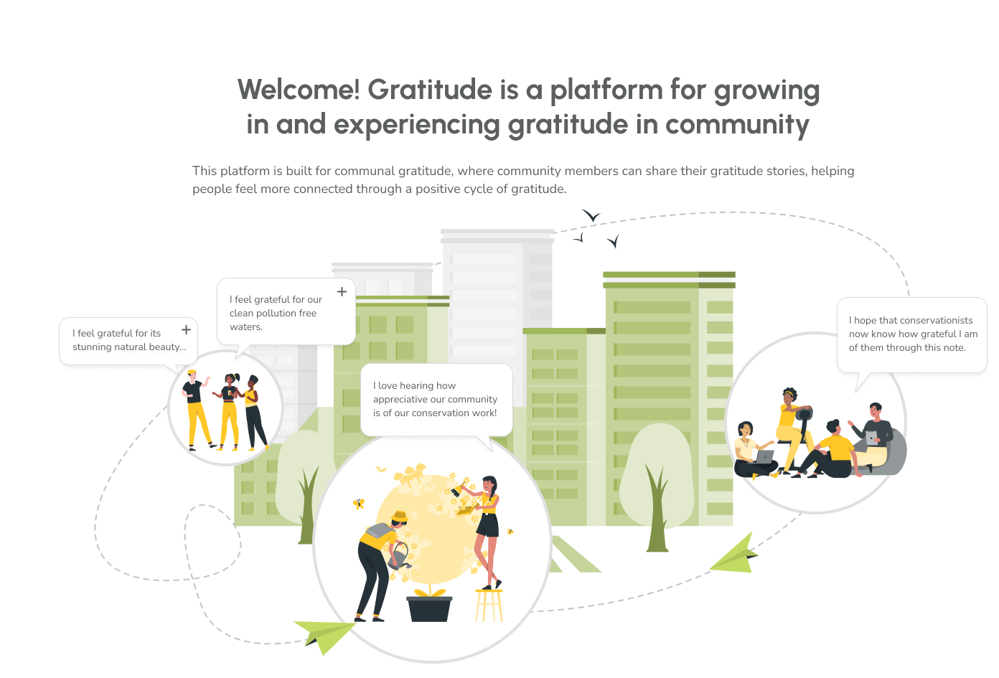
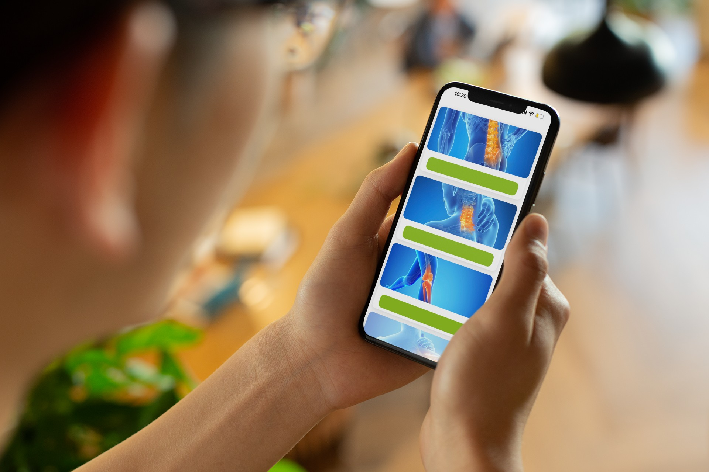
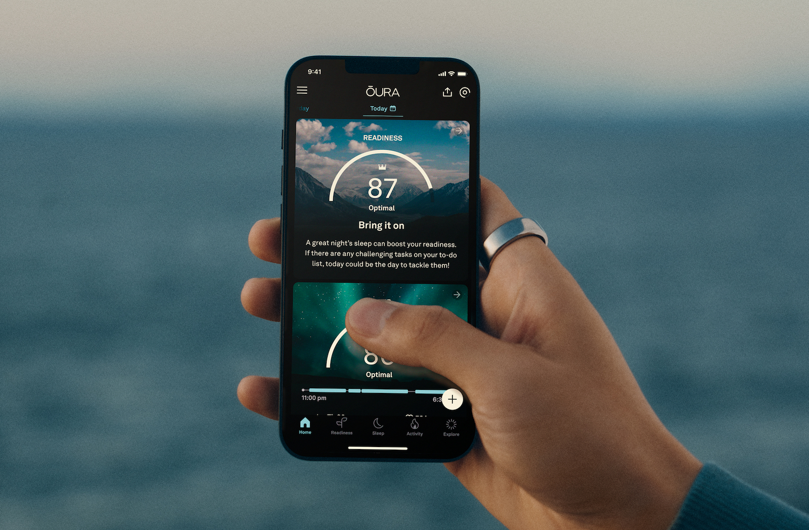
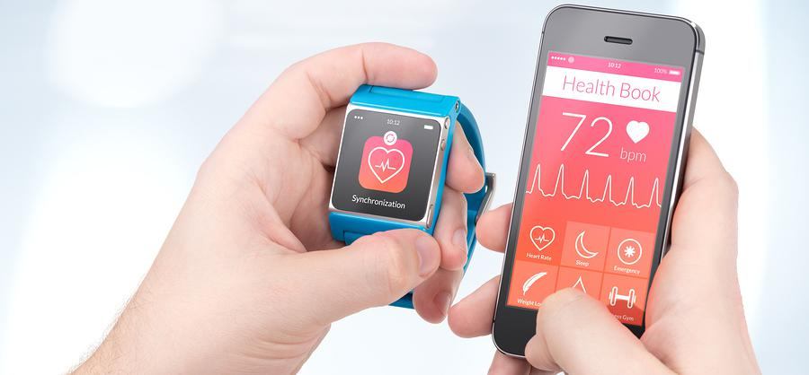
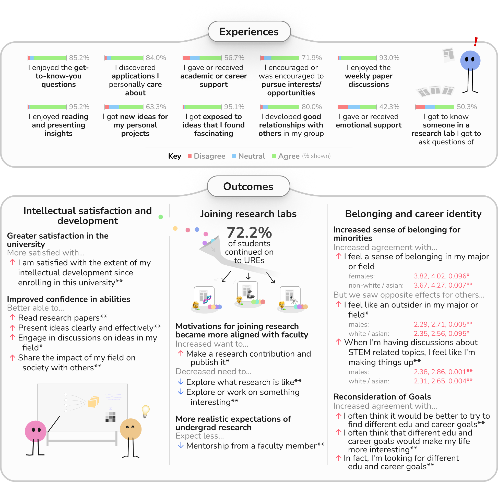
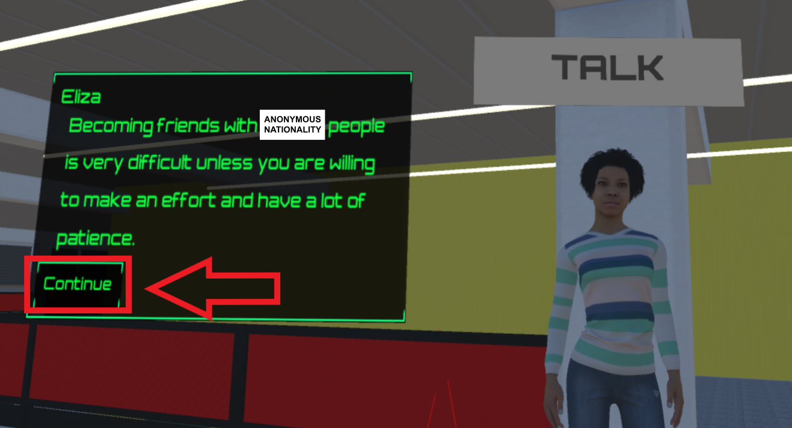
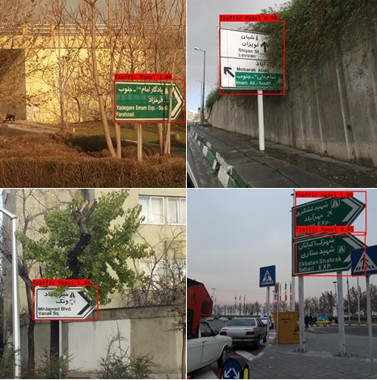
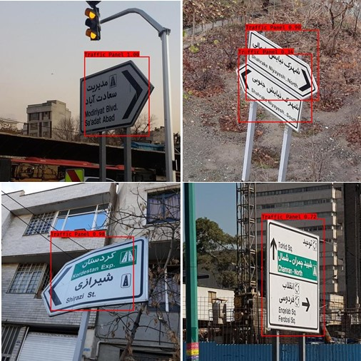
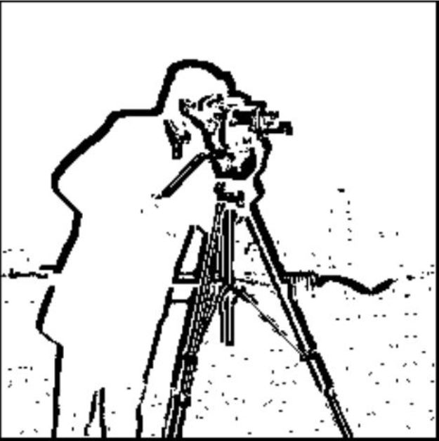

Selected Projects
User-Centered Design for Digital Patient-Navigation Tools in Oncology: Scoping Review
ABSTRACT:
Navigation programs for patients with cancer improve access and continuity of care, yet their digital transformation is often limited by poor usability and inadequate uptake.
Applying user-centered and human-centered design (UCD/HCD) principles may close this gap, but the extent to which such design methods are used and evaluated in oncology navigation tools remains unclear.
This scoping review identifies how UCD/HCD principles have been, and should be, applied in developing and implementing digital health tools for navigation for patients with cancer.
A scoping review was conducted following PRISMA-ScR (Preferred Reporting Items for Systematic Reviews and Meta-Analyses extension for Scoping Reviews) and Joanna Briggs Institute guidance.
A total of 7 databases (PubMed/MEDLINE, Scopus, IEEE Xplore, Web of Science, Embase, ACM Digital Library, and CINAHL) were searched for English-language articles published between January 2015 and July 2025.
Eligible studies reported original, peer-reviewed research on digital or mobile health interventions linked to cancer navigation and documented at least 1 UCD/HCD activity.
Two reviewers independently screened records and charted data on context, target users, functions, tool modality, design phase, methods, and outcomes. Findings were synthesized descriptively and thematically.
A total of 36 studies met the inclusion criteria. Findings were organized into 4 domains: study characteristics, navigation functions and digital modalities, design processes and methods, and UCD/HCD application.
Iterative prototyping and usability testing were the most common, while participatory design and implementation evaluation were underused. UCD/HCD approaches enhance usability and patient relevance of digital cancer navigation tools.
However, their application remains limited across cancer types, regions, and functions. Broader stakeholder participation and evaluation beyond usability are needed to strengthen coordination, equity, and sustainability in cancer care.
Empathic AI for Patient-Centered Cancer Care: A Scoping Review of Patient Navigation, Support, and Clinical Practice
ABSTRACT:
Artificial intelligence (AI) is rapidly reshaping oncology, offering advancements in clinical care and patient support.
A growing area of interest is the integration of empathic AI: systems integrating clinical precision with emotional intelligence to support medical decision-making and the emotional and psychosocial well-being of patients and caregivers.
This review aimed to explore the role of empathic AI in cancer care, with a focus on its applications in patient education, clinician support, and emotional care.
It also evaluated the ethical, cultural, and implementation challenges associated with its integration into clinical practice in oncology.
A systematic search of literature was conducted in accordance with PRISMA (Preferred Reporting Items for Systematic Reviews and Meta-Analyses) 2020 guidelines.
Peer-reviewed papers published between January 2018 and January 2025 were identified through a search of PubMed, Scopus, and IEEE Xplore, and citation tracking.
Eligible studies focused on applications of empathic AI in oncology. A total of 44 studies were included and analyzed thematically across 3 core clinical domains: tailored communication and education, diagnostics and care plan optimization, and emotional and psychosocial support.
Empathic AI demonstrates the potential to improve cancer care by enhancing patient education, clinical decision-making, and emotional support.
Common applications include personalized education for patients and providers, support for diagnostic and therapeutic decisions, and tools designed to recognize and respond to patient distress.
Several studies noted improved patient engagement and reduced clinician burden. However, concerns were identified regarding overreliance on AI systems, cultural insensitivity, and patient privacy.
Empathic AI represents a promising advancement in patient-centered oncology, integrating emotional intelligence into clinical care. Its successful implementation will require careful attention to ethical, cultural, and clinical considerations to ensure health equity, trust, and safety in AI-assisted cancer care.
Empathic and agentic artificial intelligence in nursing: perspectives on a human-centered framework for cancer care navigation in the United States

ABSTRACT:
For patients experiencing cancer, nurse navigation can ease the burden of complex care by enhancing coordination of
health services and patient outcomes. However, in under-resourced areas, trained nurse navigators may be limited or
non-existent. In the United States, artificial intelligence (AI)-enabled digital health tools are increasingly available and
may help address gaps in care coordination; however, most are not designed to specifically support nursing. This
perspective piece discusses a human-centered AI framework that integrates empathic and agentic approaches
grounded in the American Nurses Association’s code of ethics to support nurses in the United States in cancer care
navigation. The framework could augment, not replace, human empathy and agency while improving nurse
workflow, patient—clinician relationships, and care coordination services in under-resourced areas.
Simulating Empathic Interactions with Synthetic LLM-Generated Cancer Patient Personas
ABSTRACT:
Unplanned interruptions in radiation therapy (RT) increase clinical risks, yet proactive, personalized psychosocial support remains limited.
This study presents a proof-of-concept framework that simulates and evaluates Empathic AI-patient interactions using large language models (LLMs) and synthetic oncology patient personas.
Leveraging a de-identified dataset of patient demographics, clinical features, and social determinants of health (SDoH), we created realistic personas that interact with an empathic AI assistant in simulated dialogues.
The system uses dual LLMs, one for persona generation and another for empathic response, which engage in multi-turn dialogue pairs per persona.
We evaluated the outputs using statistical similarity tests, quantitative metrics (BERTScore, SDoH relevance, empathy, persona distinctness), and qualitative human assessment.
The results demonstrate the feasibility of scalable, secure, and context-aware dialogue for early-stage AI development.
This HIPAA/GDPR compliant framework supports ethical testing of empathic clinical support tools and lays the groundwork for AI-driven interventions to improve RT adherence.
Exploring Communal Gratitude in Online Communities

ABSTRACT:
Online communities are increasingly important in forming and maintaining relationships but have also faced
criticism for toxic or depression-inducing content. Motivated by research showing that grateful reflection
can lead to enhanced well-being, this paper explores how we might design online communities centered on
gratitude through a qualitative study with 15 participants. To elicit insights on how people view expressing
gratitude in online communities, we built a simple gratitude-centered online community, Gratitude, designed
to be similar in nature to many online communities, where users create short posts (notes of gratitude in
response to prompts) that other members can browse, react to, and comment on. Participants were first
interviewed and then used the Gratitude platform for three weeks, during which they filled out surveys
after each prompt. We found that while participants had concerns or questions about the value of expressing
gratitude publicly and the risks associated with doing so, they also described experiencing many benefits,
such as providing one with a platform for sharing; inspiring reflection and positivity; fostering connection
and empathy; and contributing to a cycle of gratitude and vulnerability. Participants raised several areas for
design related to better support for interaction and connection, privacy and authenticity, and motivation and
engagement. We conclude by discussing implications for future research on the design of prosocial online
communities centering cycles of positivity and authentic individual reflection in communal interactions.
Leave your smartphone out of bed: quantitative analysis of smartphone use effect on sleep quality
ABSTRACT:
Smartphones have become an integral part of people’s everyday lives. Smartphones are used across all household locations, including in the bed at night. Smartphone screens and other displays emit blue light, and exposure to blue light can
affect one’s sleep quality. Thus, smartphone use prior to bedtime could disrupt the quality of one’s sleep, but research lacks
quantitative studies on how smartphone use can influence sleep. This study combines smartphone application use data from
75 participants with sleep data collected by a wearable ring. On average, the participants used their smartphones in bed for
322.8 s (5 min and 22.8 s), with an IQR of 43.7–456. Participants spent an average of 42% of their time in bed using their
smartphones (IQR of 5.87–55.5%). Our findings indicate that smartphone use in bed has significant adverse effects on sleep
latency, awake time, average heart rate, and HR variability. We also find that smartphone use does not decrease sleep quality
when used outside of bed. Our results indicate that intense smartphone use alone does not negatively affect well-being. Since
all smartphone users do not use their phones in the same way, extending the investigation to different smartphone use types
might yield more information than general smartphone use. In conclusion, this paper presents the first investigation of the
association between smartphone application use logs and detailed sleep metrics. Our work also validates previous research
results and highlights emerging future work.
Exploring mHealth applications for self-management of chronic low back pain: A survey of features and benefits

ABSTRACT:
The adoption of Mobile Health (mHealth) for self-management is growing. mHealth solutions
are commonly used in public healthcare and health services, where they are appreciated for
their ease of use, broad reach, and wide acceptance. Chronic Low Back Pain (CLBP) is one
of the most common health problems and a leading cause of disability. As such, it imposes a
tremendous burden on patients and society. Studies have proposed that mHealth self-management
solutions, such as mobile applications, can supplement traditional care methods and benefit
patients, particularly in self-managing CLBP easier. To this end, the number of available mobile
applications for CLBP has increased. This paper i) provides an overview of scientific studies on
mobile applications for CLBP management from three different viewpoints: researchers, health
professionals, and patients, ii) uncovers the application features that were seen as beneficial in
the studies, and iii) contrasts the currently available applications for CLBP in Google Play Store
and Apple App Store against the discovered features. The findings show that “Personalization
and customization” is the most significant feature as it is beneficial from stakeholders’ viewpoint
and is represented by most applications. In contrast, “Gamification” and “Artificial intelligence”
are the least significant features, indicating a lack of attention from application creators and
researchers in this area.
How Does Sleep Tracking Influence Your Life? Experiences from a Longitudinal Field Study with a Wearable Ring

ABSTRACT:
A new generation of wearable devices now enables end-users to keep track of their sleep patterns. This paper
reports on a longitudinal study of 82 participants who used a state-of-the-art sleep-tracking ring for an
average of 65 days. We conducted interviews and questionnaires to understand changes to their lifestyle, their
perceptions of the tracked information and sleep, and the overall experience of using an unobtrusive sleep-tracking device. Our results indicate that such a device is suitable for long-term sleep tracking and helpful in
identifying detrimental lifestyle elements that hinder sleep quality. However, tracking one’s sleep can also
introduce stress or physical discomfort, potentially leading to adverse outcomes. We discuss these findings in
light of related work and highlight the near-term research directions that the rapid commoditisation of sleep-tracking technology enables.
Assessing MyData scenarios: Ethics, concerns, and the promise
ABSTRACT:
Public controversies around the unethical use of personal data are increasing, spotlighting data ethics as an increasingly important field of study.
MyData is a related emerging vision that emphasizes individuals’ control of their personal data. In this paper, we investigate people’s perceptions of various data management scenarios
by measuring the perceived ethicality and level of felt concern concerning the scenarios. We deployed a set of 96 unique scenarios
to an online crowdsourcing platform for assessment and invited a representative sample of the participants to a second-stage questionnaire about the MyData vision and its potential in the feld of
healthcare. Our results provide a timely investigation into how topical data-related practices affect the perceived ethicality and the felt concern.
The questionnaire analysis reveals great potential in the MyData vision. Through the combined quantitative and qualitative results,
we contribute to the field of data ethics.
Contrasting the Expectations and Experiences Related to Mobile Health Use for Chronic Pain: Questionnaire Study

ABSTRACT:
Chronic pain is a prolonged condition that deteriorates one's quality of life.
Treating chronic pain requires a multi-component approach, and in many cases, there are no silver bullet solutions.
Mobile health (mHealth) is a rapidly expanding category of solutions in digital health with proven potential in chronic pain management.
The initial response from the patient community, however, is mixed.
In this paper, we contrast the viewpoints of two groups of people with chronic pain concerning mHealth:
people who have adopted the technology and those who have not. Through a large-scale online questionnaire,
we discovered that non-users were more concerned about data privacy and expected mHealth to facilitate interacting with health professionals.
The users, in contrast, felt that such connections do not exist.
We highlight the benefits of mHealth solutions for people with chronic pain and the perceived obstacles to their increased adoption.
We provide recommendations to encourage people to try mHealth solutions as part of their self-care.
Evaluating Exploratory Reading Groups for Supporting Undergraduate Research Pipelines in Computing

ABSTRACT:
This paper reports on a summative analysis of Exploratory Reading Groups (ERGs), a low time-commitment, relational, student-led reading group program designed to provide students from any background and year with a broad exploration of computing research. Since prior work, the program was institutionalized as a 1-credit course with a greater emphasis on strengthening pipelines into research labs.
In analyzing 3 quarters of data from 136 participants, we found diverse indicators of impact.
Surprisingly, despite the lightweight nature of the program (∼ 2 hours/week), we observed a statistically significant increase in satisfaction with their intellectual development at the university;
confidence in reading, presenting, and communicating about their field; sense of belonging for women and minoritized ethnic groups; alignment with faculty goals in joining research labs (greater desire to make a research contribution and publish,
decreased desire to join for the purpose of exploration); and engagement in the ‘reconsideration’ dimension of career identity formation. Over 70% of the participants continued on into group research projects for undergraduate students.
The effectiveness of this scalable, lightweight initiative shows the promise of ERGs as a tool to support students in computing when connected to group research projects and points to future research directions on designing other lightweight, relational, scalable learning experiences.
Exploring Smart Standing Desks to Foster a Healthier Workplace

ABSTRACT:
Sedentary behavior is endemic in modern workplaces, contributing to negative physical and mental health outcomes.
Although adjustable standing desks are increasing in popularity, people still avoid standing.
We developed an open-source plug-and-play system to remotely control standing desks and investigated three system modes with a three-week in-the-wild user study N=15.
Interval mode forces users to stand once per hour, causing frustration. Adaptive mode nudges users to stand every hour unless the user has stood already.
Smart mode, which raises the desk during breaks, was the best rated, contributing to increased standing time with the most positive qualitative feedback.
However, non-computer activities need to be accounted for in the future.
Therefore, our results indicate that a smart standing desk that shifts modes at opportune times has the most potential to reduce sedentary behavior in the workplace.
We contribute our open-source system and insights for future intelligent workplace well-being systems.
Exploring Situated Empathy through a Metaverse Campus

ABSTRACT:
Virtual Reality (VR) is promising in communicating people’s hardship experiences in simulated situations. This can help foster empathy among people.
In this paper, we present a VR experience designed to showcase the hardship experiences of an international higher education community concerning their studies and lives in an unfamiliar neighborhood.
We collected hardship stories and data from 40 members of the community through an online questionnaire. The questionnaire analysis led to understanding critical issues, such as social problems, language barriers, issues with bureaucracy, and racism.
We then turned the issues into interactive stories in VR. We recruited 18 participants to experience the hardship stories through interactions with avatars in a VR version of the campus where the community is located.
Our preliminary results from the questionnaires suggest that the participants’ knowledge and tendency to willingness to discuss the hardships improved due to participating in the experience.
Further, our semi-structured interviews reflect positively on the VR experience’s memorability, the stories’ plausibility and participants’ increased situated empathy and awareness regarding the hardships of the local international community.
This early exploration informs future studies focusing on situated empathy.
Text-Based Traffic Panels Detection using the Tiny YOLOv3 Algorithm

ABSTRACT:
Lately, traffic panel detection has been engrossed by academia and industry. This study proposes a new
categorization method for traffic panels. The traffic panels are classified into three classes: symbol-based, text-based,
and supplementary/additional traffic panels. Although few types of research have investigated text-based traffic panels,
this type is considered in detail in this study. However, there are many challenges in this type of traffic panel, such as
having different languages in different countries, their similarity with other text panels, and the lack of suitable quality
datasets. The panels need to be detected first to obtain a reasonable accuracy in recognizing the text. Since there are few
public text-based traffic panel datasets, this study gathered a novel dataset for the Persian text-based traffic panels all
over the streets of Tehran-Iran. This dataset includes two collections of images. The first collection has 9294 images, and
the latter has 3305 images. The latter dataset is more monotonous than the first one. Thus, the latter is utilized as the
main dataset, and the first is used as an additional dataset. To this end, the algorithm uses the additional dataset for
pre-training and the main datasets for training the network. The tiny YOLOv3 algorithm that is fast and has low
complexity compared to the YOLOv3 is used for pre-training, training, and testing the data to examine the utility and
advantages of the data. The K-fold cross-validation procedure is used to estimate the model's skill on the new data. It
achieves 0.973 for Precision, 0.945 for Recall, and 0.955 for Fmeasure.
Persian Text-Based Traffic Sign Detection with Convolutional Neural Network: A New Dataset

ABSTRACT:
Recently, traffic panel detection has attracted both academic and industrial attention. However, there are a few works that studied text-based traffic panels. This is because there are many challenges in this kind of traffic panels. To obtain an
appropriate accuracy in text recognition in the text-based traffic panels, we need to detect the panel. Since there is no public text-based traffic panels dataset, we collected a new dataset
included the Persian text-based traffic panels in the streets of Tehran-Iran for the first time. Our dataset contains two sets of figures.
The first set has 9294 pictures, and the second set has 3305 pictures. The second dataset is more uniform than the
first dataset. Therefore, we exploit the first set as an additional dataset and use the second one as the main dataset. Accordingly,
we pretrain the network by the additional dataset and train it by the main dataset. We use the tiny YOLOv3 (You Only Look Once
version three) algorithm to pretrain, train, and test the dataset. The algorithm is fast and has low complexity.
We use K-fold cross-validation method to appraise the efficiency of the algorithm.
From the results section, we can see that Precision is 0.973, Recall is 0.945, and F-measure is 0.955.
Max-Min Ant Colony Optimization Method for Edge Detection Exploiting a New Heuristic Information Function

ABSTRACT:
Edge detection is a substantial operation in machine vision and image processing. Recently, many ant colony
optimization (ACO) algorithms have been exploited for a wide range of optimization problem such as edge detection. In this
study, we apply the max-min ant colony optimization (MMACO) method to detect the image edges. Moreover, we propose a
new heuristic information function (HIF) namely group based heuristic information function (GBHIF) to determine the nodes
which ants visit around their place. Our proposed HIF exploits the difference between the intensity of two groups of nodes
instead of two single one. In the simulation result section we show that the robustness of proposed edge detection algorithm
is more than that of the previous algorithms.